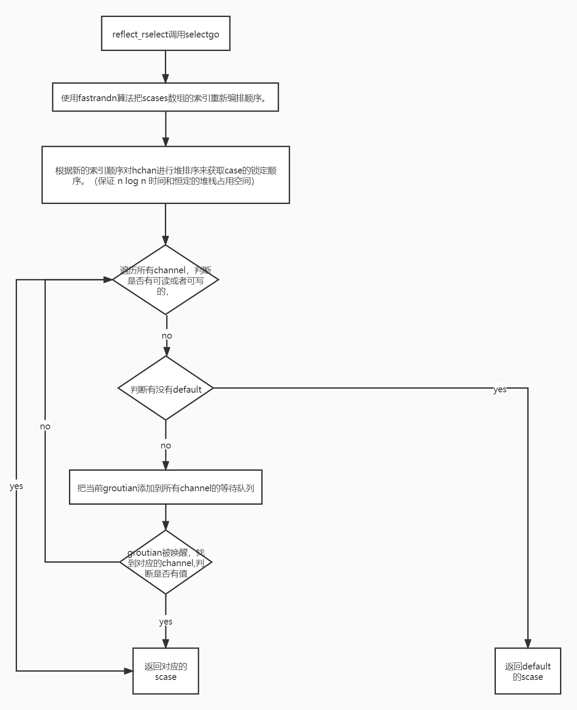

select
- Go的select语句是一种仅能用于channl发送和接收消息的专用语句，此语句运行期间是阻塞的；当select中没有case语句的时候，会阻塞当前groutine。
- select是Golang在语言层面提供的I/O多路复用的机制，其专门用来检测多个channel是否准备完毕：可读或可写。
用法
每个 case 都必须是一个通信
所有 channel 表达式都会被求值
所有被发送的表达式都会被求值
如果任意某个通信可以进行，它就执行，其他被忽略。
如果有多个 case 都可以运行，Select 会随机公平地选出一个执行。其他不会执行。
否则：
- 如果有 default 子句，则执行该语句。
- 如果没有 default 子句，select 将阻塞，直到某个通信可以运行；Go 不会重新对 channel 或值进行求值。
select{}永远阻塞当前 Goroutine。
源码学习(1.17.1)
数据结构
select中case
type scase struct { c *hchan // channel elem unsafe.Pointer // 发送或者接受数据的变量地址 }runtimeSelect 是传递给 rselect 的单个 case
// 它必须匹配 ../reflect/value.go:/runtimeSelect type runtimeSelect struct { dir selectDir //通信方向 typ unsafe.Pointer // channel type (not used here) ch *hchan // channel val unsafe.Pointer // ptr to data (SendDir) or ptr to receive buffer (RecvDir) }select case 的通信方向
type selectDir int const ( _ selectDir = iota selectSend // 发送 case Chan <- Send selectRecv // 接收 case <-Chan: selectDefault // 默认 default )
运行时
执行代码流程：
go/src/reflect/value.go rselectgo/src/runtime/select.go reflect_rselectgo/src/runtime/select.go reflectgo
reflect_rselect
//rselect 运行一个select。
//它返回所选case的索引。
//如果 case 是接收，则 val 将填充接收到的值。
//传统的 OK bool 指示接收是否对应于发送的值。
//go:noescape
func rselect([]runtimeSelect) (chosen int, recvOK bool)
//go:linkname reflect_rselect reflect.rselect
func reflect_rselect(cases []runtimeSelect) (int, bool) {
//select中case数量为0时 block会调用gopark使当前goroutine陷入永久阻塞状态。
if len(cases) == 0 {
block()
}
sel := make([]scase, len(cases))
orig := make([]int, len(cases))
nsends, nrecvs := 0, 0
dflt := -1
// 遍历 cases 数组
// 若 case 为 default，将当前 case的索引赋值给 dflt,跳出当前case,执行下一个case
// 若 case 用于发送通道， 将当前case的信息放入上面定义的sel scase数组中，orig 存放 cases的索引信息(从前往后)
// 若 case 用于接收通道， 将当前case的信息放入上面定义的sel scase数组中，orig 存放 cases的索引信息(从后往前)
for i, rc := range cases {
var j int
switch rc.dir {
case selectDefault:
dflt = i
continue
case selectSend:
j = nsends
nsends++
case selectRecv:
nrecvs++
j = len(cases) - nrecvs
}
sel[j] = scase{c: rc.ch, elem: rc.val}
orig[j] = i
}
// 只有一个default时返回default的索引
if nsends+nrecvs == 0 {
return dflt, false
}
// 压缩sel和orig切片，去除多余部分（初始化时的切片长度可能包含了default的部分，但是default的数据不会被放到sel、orig中， // 因此中间部分会存在一个为空的case 和 0的索引）
if nsends+nrecvs < len(cases) {
copy(sel[nsends:], sel[len(cases)-nrecvs:])
copy(orig[nsends:], orig[len(cases)-nrecvs:])
}
order := make([]uint16, 2*(nsends+nrecvs))
var pc0 *uintptr
// 竞争检测
if raceenabled {
pcs := make([]uintptr, nsends+nrecvs)
for i := range pcs {
selectsetpc(&pcs[i])
}
pc0 = &pcs[0]
}
chosen, recvOK := selectgo(&sel[0], &order[0], pc0, nsends, nrecvs, dflt == -1)
// Translate chosen back to caller's ordering.
if chosen < 0 {
chosen = dflt
} else {
chosen = orig[chosen]
}
return chosen, recvOK
}
// go/src/runtime/select.go
func block() {
gopark(nil, nil, waitReasonSelectNoCases, traceEvGoStop, 1) // forever
}
selectgo
selectgo函数内部逻辑：
- 使用fastrandn算法把scases数组的索引重新编排顺序。
- 根据新的索引顺序对hchan进行堆排序来获取case的锁定顺序。（保证 n log n 时间和恒定的堆栈占用空间）
锁定所有channel。
遍历所有channel，判断是否有可读或者可写的，如果有，解锁channel,返回对应数据。
- 否则，判断有没有default，如果有，解锁channel，返回default对应scase。
- 否则，把当前groutian添加到所有channel的等待队列里，解锁所有channel，等待被唤醒。
- 被唤醒后，再次锁定所有channel
- 遍历所有channel，把g从channel等待队列中移除，并找到可操作的channel
- 如果对应的scase不为空，直接返回对应的值
- 否则循环此过程

源码解析：
// selectgo 实现了 select 语句。
// cas0 指向类型为 [ncases]scase 的数组，而 order0 指向类型为 [2*ncases]uint16 的数组，
// 其中 ncases 必须 <= 65536。两者都驻留在 goroutine 的堆栈中（不管 selectgo 中的任何转义）。
// 对于竞争检测器构建，pc0 指向 [ncases]uintptr 类型的数组（也在堆栈中）； 对于其他版本，它设置为 nil。
// selectgo 返回所选 scase 的索引，该索引与其各自的 select{recv,send,default} 调用的序号位置相匹配。
// 此外，如果选择的 scase 是接收操作，它会报告是否接收到值。
func selectgo(cas0 *scase, order0 *uint16, pc0 *uintptr, nsends, nrecvs int, block bool) (int, bool) {
if debugSelect {
print("select: cas0=", cas0, "\n")
}
// 将case的首地址指针转义为切片指针
// 注意：为了保持精简的堆栈大小，scases 的数量上限为 65536。
cas1 := (*[1 << 16]scase)(unsafe.Pointer(cas0))
order1 := (*[1 << 17]uint16)(unsafe.Pointer(order0))
ncases := nsends + nrecvs
scases := cas1[:ncases:ncases]
pollorder := order1[:ncases:ncases]
lockorder := order1[ncases:][:ncases:ncases]
// 注意：编译器没有对 pollorder/lockorder 的底层数组进行零初始化。
// 即使raceenabled 为true，在没有-race 的情况下编译的包中也可能有select 语句
//（例如runtime/signal_unix.go 中的ensureSigM）。
var pcs []uintptr
if raceenabled && pc0 != nil {
pc1 := (*[1 << 16]uintptr)(unsafe.Pointer(pc0))
pcs = pc1[:ncases:ncases]
}
casePC := func(casi int) uintptr {
if pcs == nil {
return 0
}
return pcs[casi]
}
var t0 int64
if blockprofilerate > 0 {
t0 = cputicks()
}
// 生成排列顺序
// 使用fastrandn随机算法，设置pollorder数组，后面会根据这个数组进行循环，以达到随机case
norder := 0
for i := range scases {
cas := &scases[i]
// 从轮询和锁定订单中忽略没有channel的情况。
if cas.c == nil {
cas.elem = nil // allow GC
continue
}
j := fastrandn(uint32(norder + 1))
pollorder[norder] = pollorder[j]
pollorder[j] = uint16(i)
norder++
}
pollorder = pollorder[:norder]
lockorder = lockorder[:norder]
// 按 Hchan 地址对 case 进行排序以获取锁定顺序。
// 简单的堆排序，以保证 n log n 时间和恒定的堆栈占用空间。
// 防止不同顺序的case进来时锁定channel导致死锁。
for i := range lockorder {
j := i
// Start with the pollorder to permute cases on the same channel.
c := scases[pollorder[i]].c
for j > 0 && scases[lockorder[(j-1)/2]].c.sortkey() < c.sortkey() {
k := (j - 1) / 2
lockorder[j] = lockorder[k]
j = k
}
lockorder[j] = pollorder[i]
}
for i := len(lockorder) - 1; i >= 0; i-- {
o := lockorder[i]
c := scases[o].c
lockorder[i] = lockorder[0]
j := 0
for {
k := j*2 + 1
if k >= i {
break
}
if k+1 < i && scases[lockorder[k]].c.sortkey() < scases[lockorder[k+1]].c.sortkey() {
k++
}
if c.sortkey() < scases[lockorder[k]].c.sortkey() {
lockorder[j] = lockorder[k]
j = k
continue
}
break
}
lockorder[j] = o
}
if debugSelect {
for i := 0; i+1 < len(lockorder); i++ {
if scases[lockorder[i]].c.sortkey() > scases[lockorder[i+1]].c.sortkey() {
print("i=", i, " x=", lockorder[i], " y=", lockorder[i+1], "\n")
throw("select: broken sort")
}
}
}
// 锁定 select 中涉及的所有 channel
sellock(scases, lockorder)
var (
gp *g
sg *sudog
c *hchan
k *scase
sglist *sudog
sgnext *sudog
qp unsafe.Pointer
nextp **sudog
)
// pass 1 - 寻找已经在等待的东西
var casi int
var cas *scase
var caseSuccess bool
var caseReleaseTime int64 = -1
var recvOK bool
//根据索引遍历scases数组中的元素
for _, casei := range pollorder {
casi = int(casei)
cas = &scases[casi]
c = cas.c
//接收scase的索引
if casi >= nsends {
//从channel的发送队列中获取sudog，如果有，跳到recv代码块
sg = c.sendq.dequeue()
if sg != nil {
goto recv
}
//判断channel是否为带缓冲的，并且缓冲区有值，跳到bufrecv代码块
if c.qcount > 0 {
goto bufrecv
}
//如果channel已经关闭，跳到rclose代码块
if c.closed != 0 {
goto rclose
}
} else { //发送scase的索引
//开启竞争时
if raceenabled {
racereadpc(c.raceaddr(), casePC(casi), chansendpc)
}
//如果channel已经关闭，跳到sclose代码块
if c.closed != 0 {
goto sclose
}
//如果channel的读取队列里存在groutian,跳到send代码块
sg = c.recvq.dequeue()
if sg != nil {
goto send
}
//如果channel为缓冲型，并且数据没满，跳转到bufsend代码块
if c.qcount < c.dataqsiz {
goto bufsend
}
}
}
// 代码能走到这里，说明所有的channel都不具备读取的时机，判断是否有default
// 如果 select 中有 default 时，解锁所有channel，跳转到 retc 代码块
if !block {
selunlock(scases, lockorder)
casi = -1
goto retc
}
// pass 2 - 所有 chan 入队列
gp = getg()
if gp.waiting != nil {
throw("gp.waiting != nil")
}
// 循环scases，把groutian存储到channel对应的读写队列中
// 设置gp.waiting为sudog队列
nextp = &gp.waiting
for _, casei := range lockorder {
casi = int(casei)
cas = &scases[casi]
c = cas.c
//构建sudog
sg := acquireSudog()
sg.g = gp
sg.isSelect = true
// No stack splits between assigning elem and enqueuing
// sg on gp.waiting where copystack can find it.
sg.elem = cas.elem
sg.releasetime = 0
if t0 != 0 {
sg.releasetime = -1
}
sg.c = c
// 按锁顺序构造等待列表。
*nextp = sg
nextp = &sg.waitlink
// 发送scase的索引
if casi < nsends {
c.sendq.enqueue(sg)
} else { // 接收scase的索引
c.recvq.enqueue(sg)
}
}
// 等待被唤醒
gp.param = nil
// 向任何试图缩小我们的筹码量的人发出信号，告知我们即将停在一个通道上。
// 这个 G 的状态改变和我们设置 gp.activeStackChans 之间的窗口对于堆栈收缩是不安全的。
// //挂起goroutian，selparkcommit会给所有channel解锁
atomic.Store8(&gp.parkingOnChan, 1)
gopark(selparkcommit, nil, waitReasonSelect, traceEvGoBlockSelect, 1)
gp.activeStackChans = false
//唤醒后先给channel加锁
sellock(scases, lockorder)
gp.selectDone = 0
sg = (*sudog)(gp.param)
gp.param = nil
// pass 3 - 从不成功的 chan 中出队，否则它们会堆积在安静的通道上，记录成功的案例（如果有）。
// 我们按锁定顺序单独连接了 SudoG。
casi = -1
cas = nil
caseSuccess = false
// sglist为所有sudog链表
sglist = gp.waiting
// 在从 gp.waiting 取消链接之前清除所有 elem。
for sg1 := gp.waiting; sg1 != nil; sg1 = sg1.waitlink {
sg1.isSelect = false
sg1.elem = nil
sg1.c = nil
}
gp.waiting = nil
// 循环所有case
for _, casei := range lockorder {
k = &scases[casei]
if sg == sglist {
// sg 已经被唤醒我们的 G 出列了。
casi = int(casei)
cas = k
caseSuccess = sglist.success
if sglist.releasetime > 0 {
caseReleaseTime = sglist.releasetime
}
} else {
c = k.c
if int(casei) < nsends {
c.sendq.dequeueSudoG(sglist)
} else {
c.recvq.dequeueSudoG(sglist)
}
}
sgnext = sglist.waitlink
sglist.waitlink = nil
releaseSudog(sglist)
sglist = sgnext
}
if cas == nil {
throw("selectgo: bad wakeup")
}
c = cas.c
if debugSelect {
print("wait-return: cas0=", cas0, " c=", c, " cas=", cas, " send=", casi < nsends, "\n")
}
if casi < nsends {
if !caseSuccess {
goto sclose
}
} else {
recvOK = caseSuccess
}
if raceenabled {
if casi < nsends {
raceReadObjectPC(c.elemtype, cas.elem, casePC(casi), chansendpc)
} else if cas.elem != nil {
raceWriteObjectPC(c.elemtype, cas.elem, casePC(casi), chanrecvpc)
}
}
if msanenabled {
if casi < nsends {
msanread(cas.elem, c.elemtype.size)
} else if cas.elem != nil {
msanwrite(cas.elem, c.elemtype.size)
}
}
// 继续锁定channel
selunlock(scases, lockorder)
//跳转到retc代码块
goto retc
// channel的缓冲区有数据时，直接从缓冲区获取数据
bufrecv:
if raceenabled {
if cas.elem != nil {
raceWriteObjectPC(c.elemtype, cas.elem, casePC(casi), chanrecvpc)
}
racenotify(c, c.recvx, nil)
}
if msanenabled && cas.elem != nil {
msanwrite(cas.elem, c.elemtype.size)
}
recvOK = true
qp = chanbuf(c, c.recvx)
//如果有接收值，把数据地址存入elem中
if cas.elem != nil {
typedmemmove(c.elemtype, cas.elem, qp)
}
typedmemclr(c.elemtype, qp)
//接收索引往后挪一位或者初始化为0
c.recvx++
if c.recvx == c.dataqsiz {
c.recvx = 0
}
//缓冲区的数据量减少一个
c.qcount--
//解锁所有channel
selunlock(scases, lockorder)
//跳转到retc代码块
goto retc
//channel的缓冲区有空闲位置时，把数据直接写入buffer中
bufsend:
if raceenabled {
racenotify(c, c.sendx, nil)
raceReadObjectPC(c.elemtype, cas.elem, casePC(casi), chansendpc)
}
if msanenabled {
msanread(cas.elem, c.elemtype.size)
}
//设置数据到缓冲区
typedmemmove(c.elemtype, chanbuf(c, c.sendx), cas.elem)
//发送下标向后挪动或者初始化为0
c.sendx++
if c.sendx == c.dataqsiz {
c.sendx = 0
}
//缓冲区中数据量加1
c.qcount++
//解锁channel
selunlock(scases, lockorder)
//跳转到retc代码区
goto retc
recv:
// 从发送的sudog中获取数据
// 解锁channel
// 唤醒goroutian
recv(c, sg, cas.elem, func() { selunlock(scases, lockorder) }, 2)
if debugSelect {
print("syncrecv: cas0=", cas0, " c=", c, "\n")
}
recvOK = true
goto retc
//接收时channel已关闭
rclose:
// read at end of closed channel
// 解锁channel
selunlock(scases, lockorder)
recvOK = false
// 如果有有接收值， eg： case a := <- chan0,把数据地址赋值给elem
if cas.elem != nil {
typedmemclr(c.elemtype, cas.elem)
}
if raceenabled {
raceacquire(c.raceaddr())
}
goto retc
//发送时channel中存在接收goroutian
send:
// can send to a sleeping receiver (sg)
if raceenabled {
raceReadObjectPC(c.elemtype, cas.elem, casePC(casi), chansendpc)
}
if msanenabled {
msanread(cas.elem, c.elemtype.size)
}
//把数据发送到接收的goroutian中
//解锁channel
//唤醒goroutian
send(c, sg, cas.elem, func() { selunlock(scases, lockorder) }, 2)
if debugSelect {
print("syncsend: cas0=", cas0, " c=", c, "\n")
}
goto retc
//返回
retc:
if caseReleaseTime > 0 {
blockevent(caseReleaseTime-t0, 1)
}
//返回对应case的下标，如果是接收，返回recvOK,channel关闭时为false
return casi, recvOK
//发送时channel已关闭，解锁channel，直接panic
sclose:
// send on closed channel
selunlock(scases, lockorder)
panic(plainError("send on closed channel"))
}
recv接收方法
// recv 在全通道 c 上处理接收操作。
// 有两部分：
// 1) 发送者 sg 发送的值被放入通道中，发送者被唤醒继续其快乐的方式。
// 2) 接收者接收到的值（当前G）写入ep。
// 对于同步通道，两个值相同。
// 对于异步通道，接收方从通道缓冲区获取数据，发送方的数据放入通道缓冲区。
// 通道 c 必须已满并已锁定。 recv 使用 unlockf 解锁 c。 sg 必须已经从 c 出列。
// 非 nil ep 必须指向堆或调用者的堆栈。
func recv(c *hchan, sg *sudog, ep unsafe.Pointer, unlockf func(), skip int) {
//如果为非缓冲区
if c.dataqsiz == 0 {
if raceenabled {
racesync(c, sg)
}
if ep != nil {
// 从sender队列中直接复制数据
recvDirect(c.elemtype, sg, ep)
}
} else {
// 队列已满。 获取队列头部的项目。
// 使发件人将其项目排在队列的尾部。
// 由于队列已满，它们都是同一个槽。
qp := chanbuf(c, c.recvx)
if raceenabled {
racenotify(c, c.recvx, nil)
racenotify(c, c.recvx, sg)
}
//如果接受变量不为空，符合数据到ep
if ep != nil {
typedmemmove(c.elemtype, ep, qp)
}
//从缓冲区复制数据
typedmemmove(c.elemtype, qp, sg.elem)
c.recvx++
if c.recvx == c.dataqsiz {
c.recvx = 0
}
c.sendx = c.recvx // c.sendx = (c.sendx+1) % c.dataqsiz
}
sg.elem = nil
gp := sg.g
//解锁channel
unlockf()
//发送者的param设置
gp.param = unsafe.Pointer(sg)
sg.success = true
if sg.releasetime != 0 {
sg.releasetime = cputicks()
}
//唤醒goroutine
goready(gp, skip+1)
}
send方法：
// send 处理空通道上的发送操作 c.
// 发送者发送的值 ep 被复制到接收者 sg。
// 然后接收器被唤醒，继续它的快乐之路。
// 通道 c 必须为空且已锁定。 使用 unlockf 发送解锁 c。
// sg 必须已经从 c 中出列。
// ep 必须非 nil 并指向堆或调用者的堆栈。
func send(c *hchan, sg *sudog, ep unsafe.Pointer, unlockf func(), skip int) {
if raceenabled {
if c.dataqsiz == 0 {
racesync(c, sg)
} else {
// Pretend we go through the buffer, even though
// we copy directly. Note that we need to increment
// the head/tail locations only when raceenabled.
racenotify(c, c.recvx, nil)
racenotify(c, c.recvx, sg)
c.recvx++
if c.recvx == c.dataqsiz {
c.recvx = 0
}
c.sendx = c.recvx // c.sendx = (c.sendx+1) % c.dataqsiz
}
}
if sg.elem != nil {
sendDirect(c.elemtype, sg, ep)
sg.elem = nil
}
gp := sg.g
unlockf()
gp.param = unsafe.Pointer(sg)
sg.success = true
if sg.releasetime != 0 {
sg.releasetime = cputicks()
}
goready(gp, skip+1)
}
fastrandn
//go/src/runtime/stubs.go
//go:nosplit
func fastrandn(n uint32) uint32 {
// 这类似于 fastrand() % n，但速度更快。
// See https://lemire.me/blog/2016/06/27/a-fast-alternative-to-the-modulo-reduction/
return uint32(uint64(fastrand()) * uint64(n) >> 32)
}
getg
//go/src/runtime/stubs.go
// getg 返回指向当前 g 的指针。
// 编译器将此函数的调用重写为直接（从 TLS 或从专用寄存器）获取 g 的指令。
func getg() *g
fastrand
//go/src/runtime/stubs.go
//go:nosplit
func fastrand() uint32 {
mp := getg().m
// Implement xorshift64+: 2 32-bit xorshift sequences added together.
// Shift triplet [17,7,16] was calculated as indicated in Marsaglia's
// Xorshift paper: https://www.jstatsoft.org/article/view/v008i14/xorshift.pdf
// This generator passes the SmallCrush suite, part of TestU01 framework:
// http://simul.iro.umontreal.ca/testu01/tu01.html
s1, s0 := mp.fastrand[0], mp.fastrand[1]
s1 ^= s1 << 17
s1 = s1 ^ s0 ^ s1>>7 ^ s0>>16
mp.fastrand[0], mp.fastrand[1] = s0, s1
return s0 + s1
}
sellock
func sellock(scases []scase, lockorder []uint16) {
var c *hchan
for _, o := range lockorder {
c0 := scases[o].c
if c0 != c {
c = c0
lock(&c.lock)
}
}
}